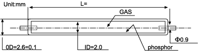
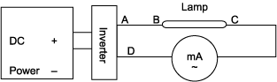

The product CCFL I26-350, is designed as the light source for backlight module of a 7" LCD monitor, and its color chromaticity are set at X=0.30±0.0 1; Y=0.285±0.01.
Lighting PrinciplesClio Technologies's CCFL is made of miniature hard-glass tube, which is spread with high-performance tri-color fluorescent powder on its inner surface and filled in idle-gad & less of mercury vapor. When powered on, the gas was dissociated to stimulate the mercury vapor and emission out 253.7nm ultra-violet rays and then changed to visible light when passed through fluorescent coating layer.
Product Characteristics- High luminance and efficiency, low power consumption, compact size and long life.
- Good impact absorbability, start ability and repeatability.
- Ability to be instantly started on under 0.1 Lx illuminations.
- Color temperature tri-colors can be adjusted to customer's requirements.
LCD monitor backlight source.
Ambient conditions for applications- For operation:
- Temperature: 0~60°C
- Relative humidity: 20~90%
- No condensation or ice on lamp surface.
- For storage:
- Temperature: -30~70°C
- Relative humidity: 5~90%
- No condensation or ice on lamp surface.
- Do not bend both-ends electrodes; doing so may influence vacuum characteristics and break down the lamp.
- Do not bend, curve, or shock on lamps; doing so may cause lamps to be broken.
- The average life may be shortened when using lamps in low temperature (<0°C) environments.
- To prevent electric-shock, do not touch both-ends electrodes of lamps while it is powered on.
- The welding of wires to electrode should be finished in a short time in order to prevent the overheating and breakage of lamps.
- Do not look at lamp for a long time when lighting; doing so may hurt eyes.
Testing Instruments & Conditions
Testing Instruments- Milli-ampare meter: INSTEK GDM-8246A
- RMS meter: INSTEK GDS820C
- High-voltage probe: TEK P6015A
- Luminance meter; TOPCON BM-7
- Temperature:25±2°C
- Relative humidty:65%±20%(no wind)
- Start testing after lighting for 5 minutes.
- Do not misconnect the positive/negative poles of the inverter.
- Do not touch instruments while on or while testing
Basic Specifications
Size and Dimensions  Materials List| No. | Part Names | Materials | Remarks |
| 1 | Electrode guide-pin | Ni | - |
| 2 | Glass tube | Hard-glass | - |
| 3 | Fluorescent Powder | Tri-Colors Fluorescent Powder |
- |
| 4 | Filling gas | Ne+Ar | - |
| 5 | Electrode | Ni | - |
| 6 | Degasnater | Al-Zr | - |
| 7 | Rubber cap | - | - |
| 8 | Connector | - | - |
| 9 | Wire assy | - | - |
| No. | Items | Specifications | Remarks |
| 1 | Color temperature | 8000k(ref.) | Tube current at 5mA |
| 2 | Color chromaticity | X=0.300±0.01 Y=0.285±0.01 |
Checking the central section of lamps with TOPCON BM-7 |
| 3 | Main ray wave length | R=611 G=544 B=453 |
Checking the central section of lamps at tube current 5mA |
| 4 | Tube current | 5mA | Measured with GDM-8246 |
| 5 | Tube voltage | 690V±10%ms | Measured with TOPCON BM-7 |
| 6 | Power (ref.) | 3.45W | At input voltage 12VDC |
| 7 | Surface luminance | 33000±10%cd/m2 | Measured with TOPCON BM-7 |
| 8 | Effective lighting length | 300mm | Total length of lamp which luminance over 80% of it at central section |
| 9 | Startup voltage | 1050 Vrms max. | At ambient temp. 25±2°C |
| 10 | Startup time | 500ms max. | Testing after lain in room temp. 25±2°C for 2 hrs later |
| 11 | Stable discharging time | 3min | 100% luminance at lamp central section after power on 5 minutes |
| 12 | Life | 25000hrs | Ambient without wind |
| 13 | Dimension | OD=2.6±0.1mm ID=2.0mm |
Lamp length 350±1.0mm |
- Tube current: SmA
- Frepuency: 50±l0kHz
- Instrument: TOPCON BM-7 0.1° field angle.
- Testing distance:5000±50mm
- Environments: Ambient temperature 25±2°C, R.H 35~85% without wind & light
- Testing time: To do testing after power on 3 minutes
Testing Schematics
Lamp Current Testing - Wire length of A-B: 150±10mm
- Wire length of C-D:300±10mm
- Measurement item: Lamp current
- Instruments: Lamp current milli-ampare meter GDM-8246

- Wire length of A-B: 150±10mm
- Wire length of C-D:300±10mm
- Measurement item: Lamp voltage
- Instruments: RMS meter GDS-820C & high voltage probe TEK P6015A
Luminance meter: TOPCON BM-7 field 0.1°
Notes- Tube current: 5mA
- Frequency: 50±10kHz
- Instrument: TOPCON BM-7 field 0.1°
- Testing distance: 500±50mm
- Environments: Ambient temperature 25±2°C, R.H. 35~85% without wind & light
- Testing time: To do testing after power on 3 minutes
Life Testing
Judging conditionsIf one of the following conditions occurred, the lamp life is over:
- The luminance of lamp central section becomes less than 50% of initial value.
- Starting voltage is higher than the rated voltage.
| Test | Rated Life | |
| Rated Life | ||
| Ambient temperature: | normal(25°C) | ≥ 25,000 hrs |
| Current: | 5rnA | |
| Power on frequency: | continuous | |
| Low Temperature Life | ||
| Ambient temperature: | 0°C±1°C | ≥ 500 hrs |
| Current: | 5rnA | |
| Power on frequency: | continuous | |
| On-off life | ||
| Ambient temperature: | normal(25°C) | ≥ 200,000 hrs |
| Current: | 5mA | |
| Power on frequency: | l0 sec. on and 10 sec. off | |
| Items | Specifications | Remarks |
| Operation temperature | 0°C~60°C | No Condensation |
| Storage temperature | -30°C~70°C | No Condensation |
| Relative humidity | 90% | No Condensation |
Reliability Testing
Lamps need to fulfill the following reliability tests items:| No. | Items | Conditions | Specifications |
| 1 | Impact testing | 6.3.1 | C,E |
| 2 | vibration testing | 6.3.2 | C,E |
| 3 | Terminal tensil strength testing | 6.3.3 | C,E |
| 4 | Heat-cycle testing | 6.3.4 | A,C,D,E |
| 5 | High temperature & humidity testing | 6.3.5 | A,B,C,D,F |
| 6 | High temperature testing | 6.3.6 | A,C,D,F |
| 7 | Low temperature testing | 6.3.7 | A,B,C,D,F |
| 8 | High temperature & humidity operation testing | 6.3.8 | A,B,C,D,F |
| 9 | Seal up testing | 6.3.9 | C,D,E |
| 10 | Snaking testing | 6.3.10 | G |
| 11 | Low temperature operation testing | 6.3.11 | A,B,C,D,F |
- According to paragraph 6.3 to do each testing
- The details of specifications are listed in paragraph 6.2
- No lighting during each testing except No. 3,8,11
After reliability testing, the characteristics of testing lamps must meet the following requirements:
- Startup voltage: No over 10% of initial value.
- Luminance: At least 50% of initial value.
- No mechanical or physical damage (e.g. nickel guide pin broken)
- No visible distortion, color changing, etc.
- No lamp can light up.
- The luminance should be up to 95% of it stability, after it has been powered on 3 minutes.
- No darken or color changing in appearance, or lighting is not normal (such as flicking, smacking, etc.)
- Impact testing:
- Pulse wave of 30G, llm/sec2 should be applied three times each in X,Y,Z directions. The lamp should be held on the testing fixture.
- Vibration test:
- Acceleration 19.6m/sec2, frequency 20-500-20Hz be applied in 3 minutes each time, and each In X,Y,Z directions for l hour. Be careful to prevent resonant point.
- Terminal wire intensity test:
- Tube axial load: l kg
- Time: 5 sec.
- Heat-cycle test:
- Operating 10 cycles as following condition

- High-temperature & humidity storage test:
- Temperature: 70±2°C
- Humidity: 90±5%R.H
- Time: 500 hrs
- The lamps should be preserved at room temperature for 2 hrs before doing function testing.
- High temperature storage test:
- Temperature: 70±2O°C (Dry)
- Time: 1000hrs
- The lamps should be preserved at room temperature for 2 hrs before doing function testing.
- Low temperature storage test:
- Temperature: -30°C ±2O°C
- Time: 1000hrs
- The lamps should be preserved at room temperature for 2 hrs before doing function testing.
- High-temperature & humidity operating test:
- Temperature: 40±°C
- Humidity: 90%R.H
- Time: 5mA
- Current: 5mA
- Current: 5mA
- Sealed test:
- Sampling 40pcs dipped in the boiling water(>95°C) for 10 sec, then dipped in 4°C water for 10 sec. Doing cycle 3 times. All samples should be passed, if there is one fail, do the Next test again.
- Snaking test:
- Temperature: 50±2°C
- Time: 24hrs
- Current: 5mA
- The lamps should be preserved at >0°C ±2 temperature for 2 hrs before doing function testing.
- Low-temperature operation test:
- Temperature: 0±1°C Time: 5mA The lamps should be preserved at room temperature for 2 hours before doing function testing.
Inspections & AQL (Acceptable Quality Level)
Lamp Quality ControlIn order to control the lamp's quality, according to CNS 2779 Z4006 table II -A ~single sampling plans of normal inspection to do the quality control.
- Bad quality: Snaking, flicker, crack (No external force)
- Light bad quality: Fluorescent coating cracked & peeled off
Remark:
- Hg stuck on inner wall of tube is normal.
- Light black color of two end-sides of glass tube is normal.
- Fluorescent coating peeled off in 15mm from two end-sides is not counted.
| Inspection Items | AQL | Inspection Methods |
| Appearance of Lighting | Bad quality AQL<0.4 Light bad quality AQL<0.5 |
Vision |
| Mechanical dimensions | N=5, C=0 | Measuring tools |
| Initial characteristics | N=5, C=0 (AQL 0.4) | According to 3,4 paragraph |
Packing & Marking
According to the packing requirement standards of Clio Technologies Inc.